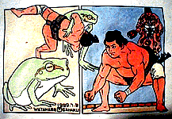
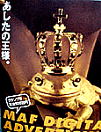
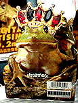

|
カエルが力士を上手投げ！ 福岡のワタナベ画伯がカエル絵！  【福岡発=げこげこ大王直筆】春になったしＴシャツでも買うかなーっ、と漫然と雑誌を繰っていたら、この絵柄に出くわして、いきなり購入してしまいました。なにしろ、力士を相手に堂々の四つ相撲を取り、右からの上手投げを豪快に決めるカエル力士の姿に一目惚れしてしまったのだ。鳥獣戯画の世界では、ウサギを相手の勝利だったが、こっちは、力士相手の勝利にカエルも喜んでいるに違いない！ カエルと大相撲を愛する大王のために描いてくれたようなものではないかあ！買ったのはいいけど、着るのがもったえなくなったので、近く２着目を購入する予定だ。 作者は、地元福岡では、ちょっと名前を知られている、ワタナベ画伯だ。同じ福岡出身の３２６さんの方が先に全国区になってしまったが、デッサン力に優れ、動物絵を使った深い笑いを生み出すワタナベ画伯の威力は、地元では、人気も急上昇中なのだ。その彼が、カエル絵柄のＴシャツを作ったのであるから、もー大王は、全面的に支持するのであるーっ！！
画伯のＴシャツは、大王は福岡市大名のカエルショップで購入したが、５月１５日から２１日まで、福岡市中央区天神1-17-11イムズ６階IRISで展示会するそうです。
世界各地でカエル王が即位！？  【ハワイ発=あきこ様】ハワイ旅行で発見しました。王冠をかぶっていて、なんだか可愛い。裏画面は、同じカエルの顔のところにキスマークがついているんです。よほどカエルが好きな人が作ったんでしょうねー。=写真右=【福岡発=就職王様】会社の事務所に、巨大なカエルのポスターがかかっているんですが、とても可愛いのです。黄金色のアマガエルが、王冠をかぶって、王様になっています。カエルをテーマにしたコンテストではなさそうですが。。。。=写真左=
【全国かえる奉賛会】これまでカエルは、童話『かえる王子』でも知られるように、王子止まりのことが多かったが、人々のカエルに対する熱意が高まり、王様に推挙する声があとをたたないために、世界的に王様に即位する例が増えているのであろう。まったくよろこばしいことである。カエル系議員、カエル系首長だけでなく、カエル系国王、カエル系皇帝を推戴して、みんなで幸福になろう！！
助っ人外人カエル投手が入団！【福岡発=天神ハチのＯＬ様】先日、某地元新聞の長崎県北版を読んでいると、『九州で十三番目の硬式社会人野球チームとなった長崎県佐世保市の「佐世保ドリームスターズ」』に米海軍佐世保基地所属の兵隊さん２人が、助っ人外人選手として入団したそうです。そのうちの一人の名前は、『米軍病院所属のアドキンス・カエルさん（２５）』で、基地には硬式チームがないので参加したそうです。カエルさんは投手として１回を４安打、５失点。チームは、０―２７の完敗だったそうです。やっぱりカエル投手では押さえがきかないのでしょうか。
【全国かえる奉賛会】ううーむ。カエル投手には、次回の登板で、ぐにゅーむ、と曲がる変化球で相手打線を押さえて欲しいぞ！がんばれーカエル投手。

モロー生産順調に進む！居眠りモローも製造中！【福岡発=モロー寺井同志記者】福岡ではぼちぼち桜が咲いてきてます。今週末は花見ですな。本業に余裕が出てきたので進んでます。ちょっとピンぼけですが居眠りモローにきょうはもってないですがハルオくんモロー。あとマラカスが机の上にありますがこれは今製作中のボーカルモローくん用です。４月中にはケロ天市場に投入できるかと。訪問９９９９９人目に記念品贈呈！【全国かえる奉賛会】９９９９９人目の訪問者に、記念品を贈呈するぞー。該当者は、大王様へのメールwakuro-3@hf.rim.or.jpで自己申告してくれー。福岡かえる展２のＭＬを開設！【福岡かえる展２事務局】福岡かえる展２の実行委員会用のメーリングリストを開設しました。公式ホームページの他に、実行委員会メンバーが情報交換する場所です。もちろん最新の情報は、昨年同様に、できるかぎりすべて、公式ホームページで公開します。メーリングリストで、その準備段階から体験したいというカエラーは、参加していただいてかまいません！参加申し込みは、ここからも自分でできるからねーっ！ 投稿採用者に武功カエル徽章を授与！ |
かえる古新聞過去に取り上げた記事を見出し付きで一覧したい人は、ここをクリック◆創刊号を見る◆先週号を見る◆話題の号を見る◆かえる新聞の昔を読む
|
私も入っています。。全国かえる奉賛会
大王様に会うには、このバナーをクリック。ずっと奥に写真館があるぞ。全国かえる奉賛会に入会するには、自分のホームページのどこかに、下の部分を追加するとバナーがリンク付きで表示されるぞ。どんどん入会しましょー |


|